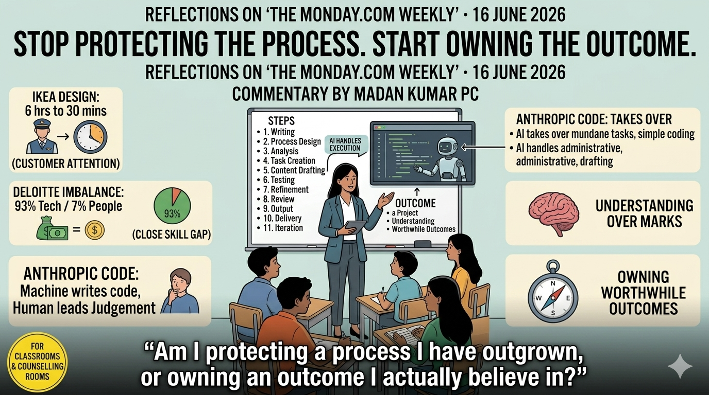

Process to Outcomes

Reflections on The monday.com weekly — 16 June 2026 (“Shifting focus from process to outcomes”). Facts and the single quoted phrase are credited to that briefing and its cited sources — Greg Boone (Walk West), Ingka Group, Deloitte, PwC, Fortune and Anthropic. All interpretation and the educational framing are mine.
Stop Protecting the Process. Start Owning the Outcome.
An educator’s notes on how AI is quietly moving the unit of value from process to outcome — and what that asks of us in classrooms and counselling rooms.
Most workplace newsletters wash over me. This week’s monday.com briefing did not. Its core claim is simple and a little uncomfortable: artificial intelligence has stopped being a faster way to do the work and started being a reason to rethink what the work is for. The unit of value, it argues, is shifting from the process we follow to the outcome we create.
I read that as an educator, not a manager — and the shift felt familiar. It is the same tension I see every time a student confuses finishing the syllabus with actually learning, or a teacher measures a term by lessons delivered rather than understanding built. So here is my take, with full credit to monday.com for the reporting that prompted it.
Three Signals I Couldn’t Unsee
Before the main argument, the briefing stacked up three data points worth pausing on.
- IKEA’s design rooms. According to Ingka Group’s chief digital officer, room-design sessions that once took a staff member around six hours now take roughly thirty minutes with AI assistance — and the company has put 40,000 of its 160,000 employees through AI-literacy training. What struck me was not the time saved but where the time went: toward higher-value customer conversations. The tool did not replace the person; it relocated their attention.
- The 93-to-7 problem. monday.com cites Deloitte’s vice chair of technology on a striking imbalance — companies spend roughly 93 cents of every dollar on AI technology and just 7 cents on the people meant to use it. A PwC study in the same piece found that a small minority of organisations capture most of AI’s economic value. That gap, the briefing suggests, is not bought with bigger budgets; it is closed by helping people understand, trust and actually use the tools.
- Code that writes itself. The detail that stayed with me: monday.com reports, via Fortune, that the head of Claude Code at Anthropic has not hand-written code in eight months, with the tool now largely writing itself. When the machine handles the execution, the human’s job moves up the stack — to judgment, and to deciding what is worth building at all.
Three different industries, one signal. The doing is getting cheaper. The deciding is getting more valuable.
The Shift: From the Steps to the Result
The heart of the briefing is an interview with Greg Boone, CEO of Walk West and author of the forthcoming AI at the Speed of Trust. His argument, as monday.com frames it, is that most leaders underestimate what an AI transformation actually requires — because it is not really about adopting tools. It is about becoming, in his phrase, “agentic by design.”
Boone’s point is that most of our processes were built around assumptions and limitations that no longer hold. We kept the steps long after we forgot why they existed. AI gives us a rare excuse to revisit those assumptions and ask whether a workflow still earns its place — or whether it survives only out of habit.
I find that liberating and slightly threatening in equal measure. Because the same question applies to a lesson plan, a marking routine, a counselling intake form — and to an entire curriculum.
Five Questions Worth Stealing
The briefing offers leaders a set of moves for shifting a team from process to outcome. I have rewritten them as questions, because questions travel better between a boardroom and a staffroom. Each one works just as well if you read “team” as “class” and “employee” as “student.”
- Are we protecting tasks, or expanding impact? People tie their identity to the tasks they have mastered. When AI absorbs a task, it can feel like an attack on the self. The work of a leader — and a teacher — is to help someone separate who they are from what they happen to do this year.
- Do we know the difference between the work and the outcome? A report is not an outcome; a better decision is. A finished project is not an outcome; a problem solved is. Naming the real outcome first changes everything that follows.
- Which of our processes are necessary, and which are just old? Boone’s sharpest prompt: if we were starting from scratch today, would we still do it this way? Most timetables, templates and rituals would not survive that question honestly asked.
- Are we testing the tool’s limits, or assuming them? The instinct is to decide upfront what AI may and may not touch. Boone flips it — delegate generously first, then pull back only where you have actually found the edge. You cannot know what a tool can do if you begin by fencing it in.
- What would we do with the time we got back? This is the one most people skip. Automation only pays off if the freed-up hours are reinvested in something that matters — deeper relationships, harder problems, better thinking. Time saved and then squandered is just a faster way to stand still.
Why This Is Really an Education Story
Here is the connection I cannot let go of. Everything Boone says to leaders about employees, we have been saying — or should be saying — to students for years.
We tell young people that marks are not the outcome; understanding is. That a degree is not the destination; a life of contribution is. That the purpose of school is not to complete tasks efficiently but to become someone capable of judgment. AI has simply made that old educator’s truth unavoidable for everyone else.
For those of us in career guidance and Future Pathway work, the implication is direct. The students who thrive in the next decade will not be the ones who execute instructions fastest — machines win that race. They will be the ones who can define a worthwhile outcome, decide what is worth doing, and reinvest the time technology gives them into becoming more human, not less. Our job is to build that capacity deliberately, while there is still time.
The Question I’m Sitting With
monday.com’s briefing was written for managers worried about productivity. I am reading it as a teacher worried about purpose. The two turn out to be the same worry.
So the question I am carrying into my own week is the one I would put to any colleague, any student, any version of myself that is busy but unsure why:
Am I protecting a process I have outgrown, or owning an outcome I actually believe in?
That is a question no AI can answer for us. Which is rather the point.